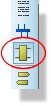
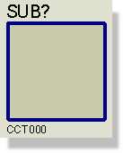
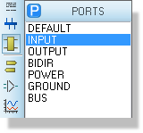
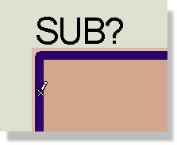
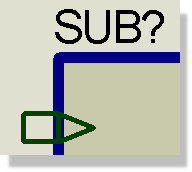

Sub-circuits are used to attach lower level sheets to higher level sheets in a hierarchical design. Each sub-circuit has a name that identifies the child sheet, and a circuit name that identifies the child circuit. On any given sheet, all the sub-sheets should have different sheet names, but may - and often will - have the same circuit names.
More information about hierarchical design is given in Hierarchical Designs.
Sub-circuits can also have property lists, and this leads to the possibility of parameterized circuits in which different instances of a given circuit can have different part values (or other properties) as well as independent annotations.
Further information about this powerful feature are given in Parameterized Circuits.
To place a sub-circuit box:


To place sub-circuit ports:



Having placed a port or ports, you must annotate them. Hierarchical design works by connecting the ports on the parent object with like named logical terminals on the child sheet. It follows that both the ports and the terminals must be given unique names. This can be achieved in a variety of ways:
It is quite legal to connect buses to ports. In this case, the name for the port should generally define the range for the bus, as in D[0..7], although this is not mandatory. If no range is given, Proteus will use the range given for the bus section that connects to the port, or if that has no name or range then the width will be taken from whatever bus pins connect to the bus.
Placing a port without annotating it will be reported as a netlist error since such an object has no meaning and cannot be tied up with anything on the child sheet.
Information on naming sub-circuits and their general usage can be found in Hierarchical Designs.
A sub-circuit may be resized using the general procedure described in Resizing an Object and edited using any of the general editing techniques described in Editing an Object.
See Parameterized Circuits for further information on parameterized circuits.
Sub-circuits have the following system properties:
| Property Name | Description |
|
NAME |
The sub-circuit instance name. This is also used as the name for the child sheet. |
|
CIRCUIT |
The name of the child circuit. If you do not assign this, Proteus will choose an automatic name when you first enter the child sheet. |
If any other property names are assigned, then these will create user properties in the sub-circuit's text block. Such properties then become sheet properties for the child sheet and may be used in property expressions.